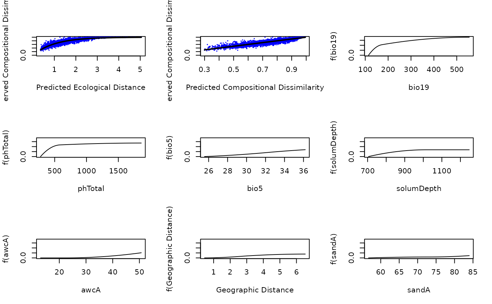
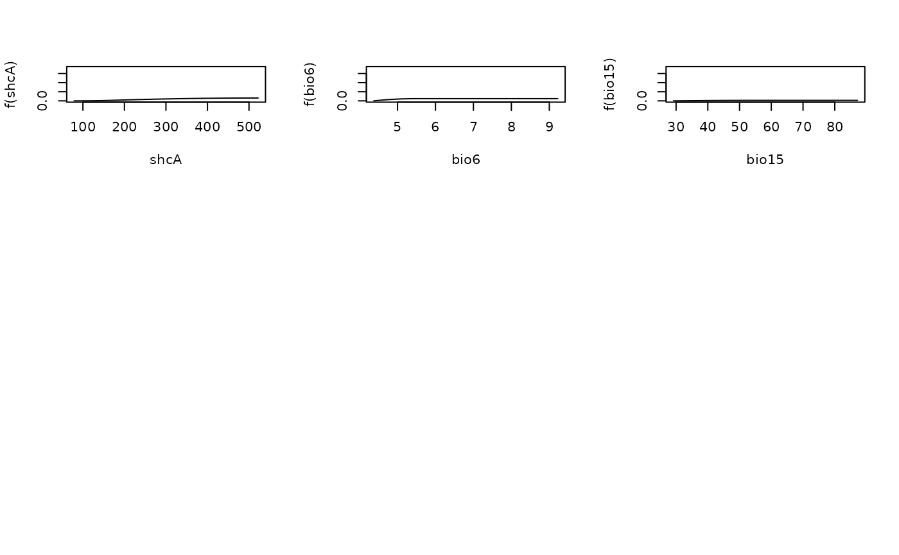

Plot Model Fit and I-splines from a Fitted Generalized Dissimilarity Model.
Source:R/gdm.plot.R
plot.gdm.Rdplot is used to plot the I-splines and fit of a generalized
dissimilarity model created using the gdm function.
Arguments
- x
A gdm model object returned from
gdm.- plot.layout
This argument specifies the row and column layout for the plots, including: (1) a single page plot of observed response data against the raw linear predictor (ecological distance) from the model, and (2) a single page plot of the observed response against the predicted response from the model, i.e. after applying the link function, 1.0 - exp(-y), to the linear predictor, and (3) the I-splines fitted to the individual predictors. Default is 2 rows by 2 columns. To produce one predictor plot per page set plot.layout to c(1,1). The first two model plots are always produced on a single page each and therefore the layout parameter affects only the layout of the I-spline plots for those predictors that featured in the model fitting process (i.e., predictors with all-zero I-spline coefficients are not plotted).
- plot.color
Color of the data points that are plotted for the overall plots.
- plot.linewidth
The line width for the regression line over-plotted in the two overall plots to optimize the display of the line over the data points.
- include.rug
Whether or not to include a rug plot of the predictor values used to fit the gdm in the I-spline plots. When set to TRUE, a s ite-pair table must be supplied for the rug.sitepair argument. Default is FALSE.
- rug.sitepair
A site-pair table used to add a rug plot of the predictor values used to fit the gdm in the I-spline plots. This should be the same site-pair table used to fit the gdm model being plotted. The function does not check whether the supplied site-pair table matches that used in model fitting.
- ...
Ignored.
Value
plot returns NULL. Use summary.gdm to obtain a
synopsis of the model object.
References
Ferrier S, Manion G, Elith J, Richardson, K (2007) Using generalized dissimilarity modelling to analyse and predict patterns of beta diversity in regional biodiversity assessment. Diversity & Distributions 13:252-264.
Examples
##set up site-pair table using the southwest data set
sppData <- southwest[c(1,2,13,14)]
envTab <- southwest[c(2:ncol(southwest))]
sitePairTab <- formatsitepair(sppData, 2, XColumn="Long", YColumn="Lat",
sppColumn="species", siteColumn="site",
predData=envTab)
#> Warning: No abundance column was specified, so the biological data are assumed to be presences.
#> Aggregation function missing: defaulting to length
##create GDM
gdmMod <- gdm(sitePairTab, geo=TRUE)
##plot GDM
plot(gdmMod, plot.layout=c(3,3))

